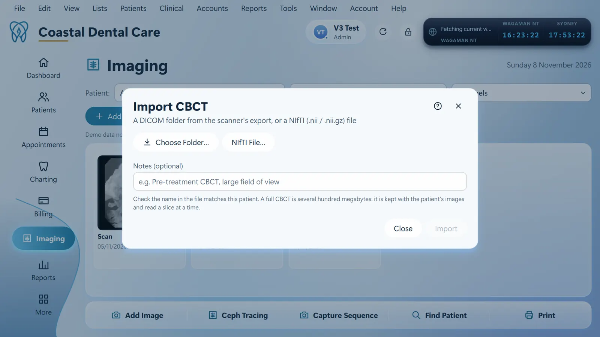
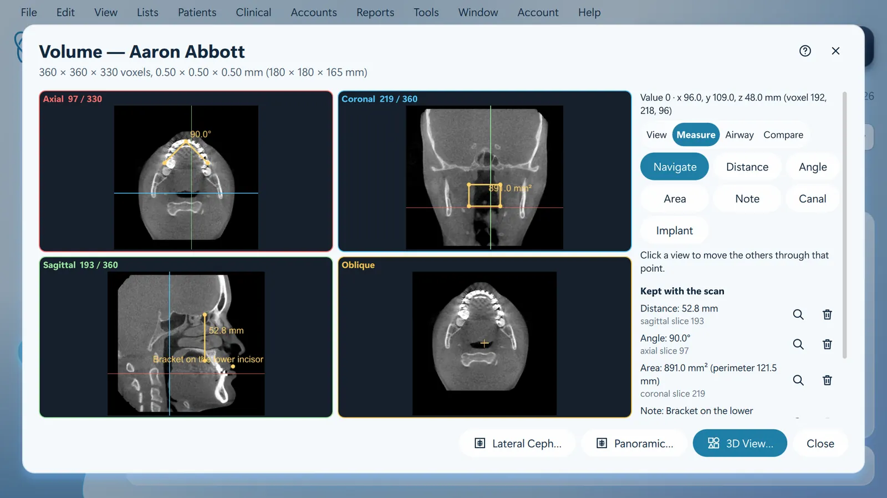
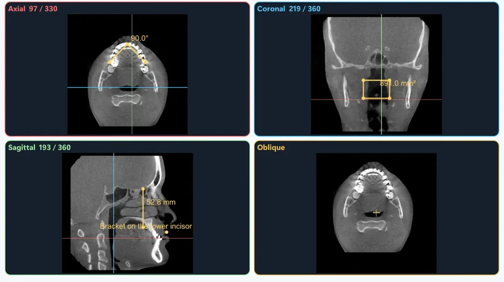
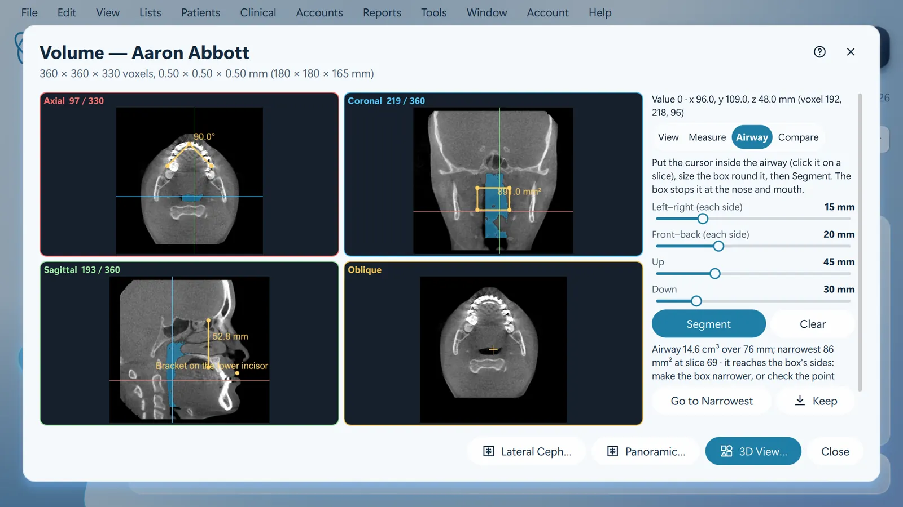
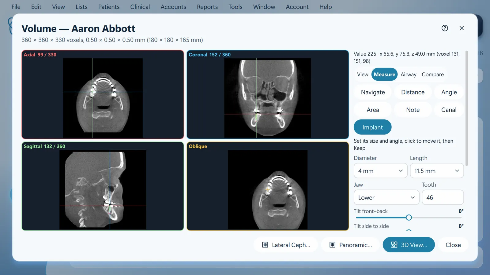
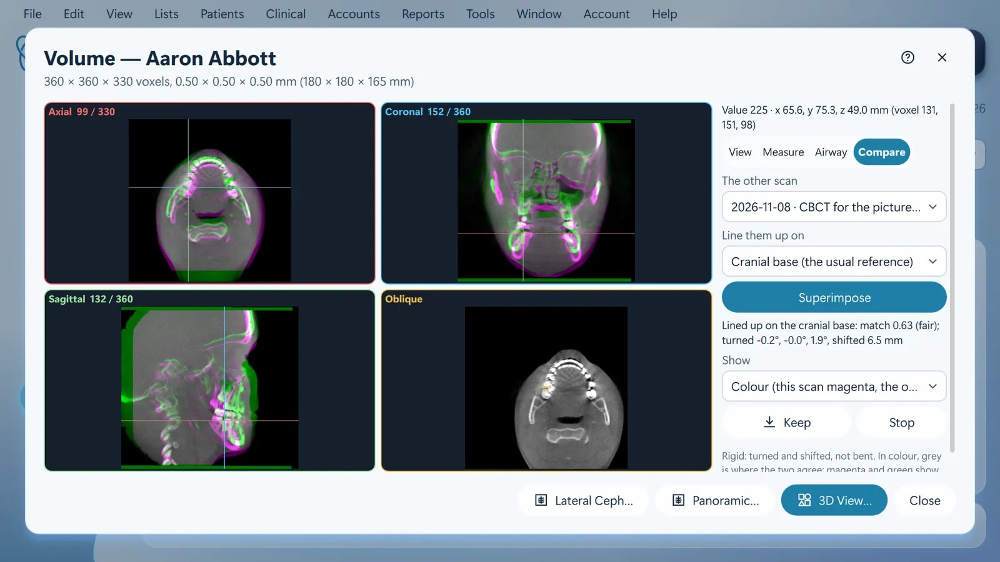
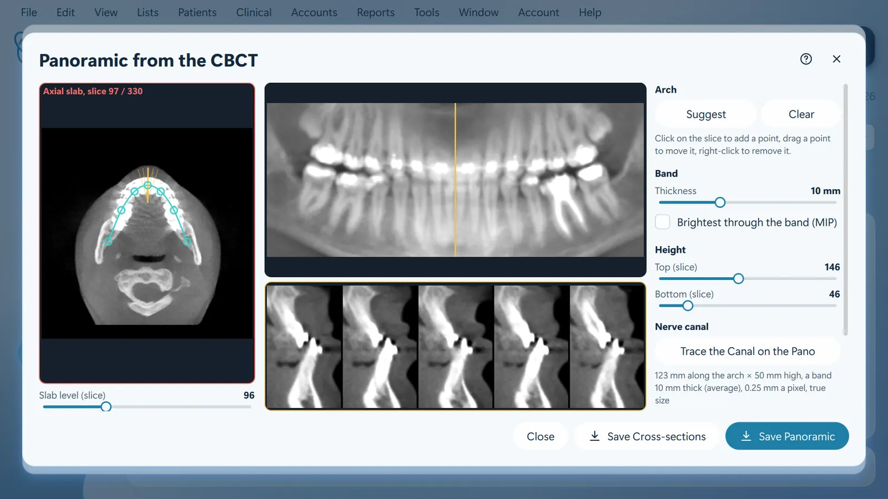
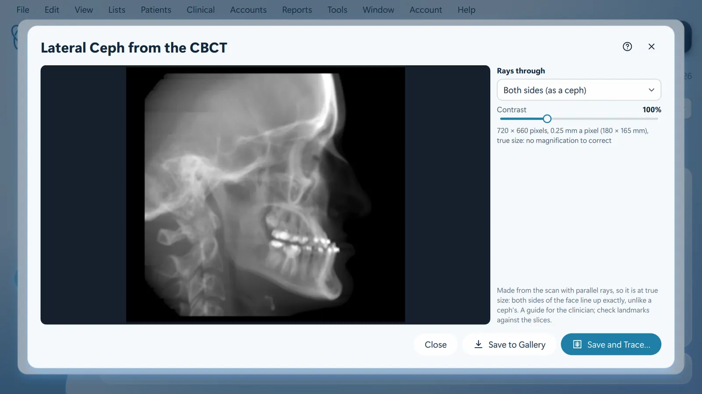

01 / 09 · CBCT & 3D
Importing a CBCT
Imaging → Import CBCT
Bring in a DICOM CBCT or CT series, or a NIfTI file, and keep it under the patient.
- Single and multi-frame DICOM, in any order and orientation.
- Pick the series if a folder holds more than one.
- The scan shows in the patient's gallery with everything else.
- Search and retrieve a scan from PACS, such as one taken by a specialist.

02 / 09 · CBCT & 3D
The slice viewer
CBCT → View
Axial, coronal and sagittal views with linked crosshairs: click in one and the others move to that spot.
- Window and level with presets.
- Slab thickness, averaged or brightest-through (MIP).
- An oblique plane at any angle.
- Invert and sharpen.

03 / 09 · CBCT & 3D
Measuring in 3D
CBCT → Measure
Measure what you need, across views.
- Distances and angles in 3D, with points on different views.
- Area on any plane.
- Notes pinned to a slice.
- Each measurement is kept with the scan, with Go To and Remove.

04 / 09 · CBCT & 3D
Airway
CBCT → Airway
Click inside the airway and DentaCore finds the air joined to it within a box you set.
- Tinted on every view.
- Volume, length and the narrowest cross-section.
- Go to Narrowest shows where it is. Keep saves it with the scan.

05 / 09 · CBCT & 3D
Nerve canal and implant planning
CBCT → Measure → Implant · Canal
Trace the nerve and place an implant with its clearance shown.
- Trace the canal by clicking along it on any view or the panoramic. DentaCore makes a smooth tube of the diameter you set.
- Place a generic implant by diameter and length, upper or lower, at its tooth, and tilt it front to back and side to side.
- Tinted on every view and the panoramic, with its clearance to the canal and a warning under 2 mm.
- Plans are kept, moved and changed.

06 / 09 · CBCT & 3D
Comparing two scans
CBCT → Compare
Line up a second CBCT of the same patient to see what changed.
- Register on the cranial base or the whole scan.
- Show the two in colour, blended, or as a difference.

07 / 09 · CBCT & 3D
Panoramic from a CBCT
CBCT → Panoramic
Make the 2D images you're used to from the scan, at true size.
- Panoramic: DentaCore suggests the arch from the teeth; click to change it. Set the band's thickness and height.
- Five cross-sections across the arch.

08 / 09 · CBCT & 3D
3D view
CBCT → 3D View
See the scan in 3D on an ordinary practice computer.
- Surfaces at a threshold for bone, teeth or skin, translucent, brightest-through or X-ray-like.
- Drag to spin it, or jump to the standard views: front, sides, top, chin up and back.
- Crop a box out to see inside.
- Save View to Gallery keeps a picture.
- Everything is drawn on the processor, so no separate graphics card is needed.

09 / 09 · CBCT & 3D
Intraoral scans and study models
Imaging → Import 3D Model
Bring in an intraoral or model scan and measure it.
- STL, PLY and OBJ files.
- Measure distances, tooth widths by FDI number from contact to contact, and arch length along the arch.
- Space analysis: the space available against the room the teeth need, per arch.
- Bolton: the anterior ratio (norm 77.2% ± 1.65) and overall ratio (91.3% ± 1.91), with the excess in millimetres and on which arch.
- Marks are drawn on the model and kept with it.